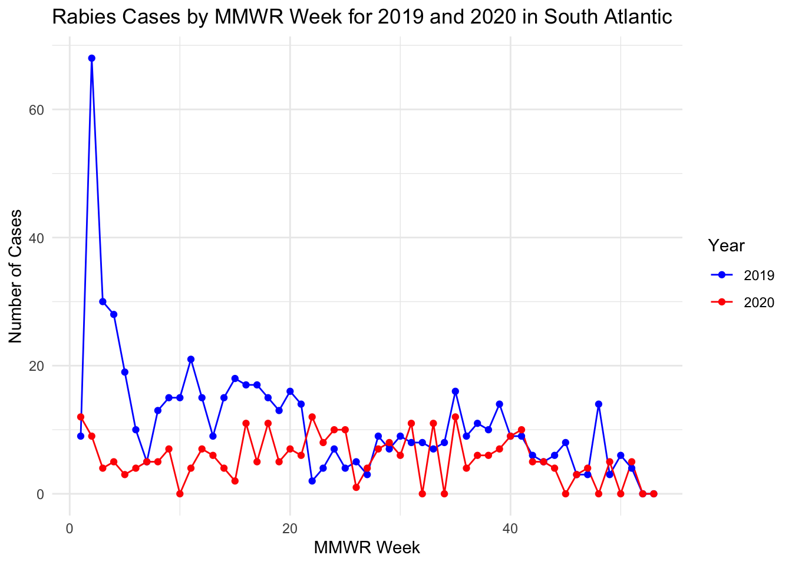
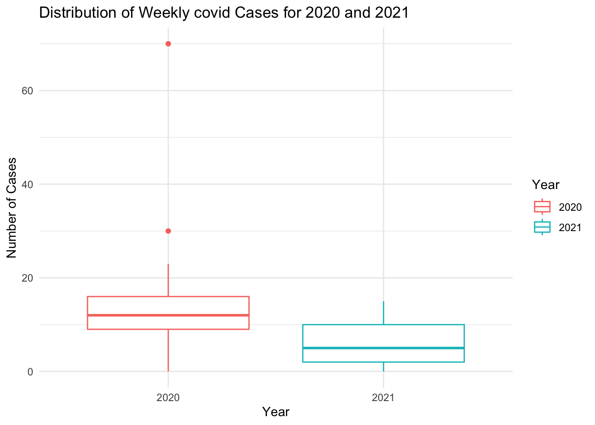

here() starts at /Users/XylemHu/Desktop/EPID8060E/GitHub/andrew_ruiz-MADA-portfolio
library(readr)library(dplyr)
Attaching package: 'dplyr'
The following objects are masked from 'package:stats':
filter, lag
The following objects are masked from 'package:base':
intersect, setdiff, setequal, union
library(tidyr)library(ggplot2)library(forecast)
Registered S3 method overwritten by 'quantmod':
method from
as.zoo.data.frame zoo
# Read the CSV file using here()rabies2020 <-read_csv(here("cdcdata-exercise", "Rabies2020.csv"))
Rows: 3710 Columns: 23
── Column specification ────────────────────────────────────────────────────────
Delimiter: ","
chr (11): Reporting Area, Rabies, Animal, Current week, flag, Rabies, Animal...
dbl (8): MMWR Year, MMWR Week, Rabies, Animal, Current week, Rabies, Animal...
lgl (4): Rabies, Human, Current week, Rabies, Human, Previous 52 weeks Max†...
ℹ Use `spec()` to retrieve the full column specification for this data.
ℹ Specify the column types or set `show_col_types = FALSE` to quiet this message.
# Now apply your renaming and cleaningnames(rabies2020) <-gsub("[^[:alnum:] ]", "", names(rabies2020))names(rabies2020) <-gsub(" ", "_", names(rabies2020))rabies2020_cleaned <- rabies2020# Check the column namesprint(names(rabies2020_cleaned))
This dataset was obtained from the data.cdc.gov site link to data. It contains the count of animal and human rabies cases in the US and territories for 2020 and 2019 by MMWR Week. Since there were no human rabies cases in 2020 or 2019, this will focus on animal cases only.
Unlike human cases, which rarely go undiagnosed, animal cases are more prone to surveillance bias. Comparing the counts from 2020 to 2019, may be an important indicator of the effects of limited public health lab testing in the first year of the pandemic when public health staff were diverted to support COVID operations and some labs were closed.
Let’s look at the first few rows
head(rabies2020)
# A tibble: 6 × 23
Reporting_Area MMWR_Year MMWR_Week Rabies_Animal_Current_week
<chr> <dbl> <dbl> <dbl>
1 MASSACHUSETTS 2020 1 NA
2 US RESIDENTS 2020 1 16
3 WASHINGTON 2020 1 NA
4 HAWAII 2020 1 NA
5 WISCONSIN 2020 1 NA
6 MARYLAND 2020 1 NA
# ℹ 19 more variables: Rabies_Animal_Current_week_flag <chr>,
# Rabies_Animal_Previous_52_weeks_Max <dbl>,
# Rabies_Animal_Previous_52_weeks_Max_flag <chr>,
# Rabies_Animal_Cum_2020 <dbl>, Rabies_Animal_Cum_2020_flag <chr>,
# Rabies_Animal_Cum_2019 <dbl>, Rabies_Animal_Cum_2019_flag <chr>,
# Rabies_Human_Current_week <lgl>, Rabies_Human_Current_week_flag <chr>,
# Rabies_Human_Previous_52_weeks_Max <dbl>, …
# the column names have special characters that I will remove#names(rabies2020) <- gsub("[^[:alnum:] ]", "", names(rabies2020))#names(rabies2020) <- gsub(" ", "_", names(rabies2020))#print(names(rabies2020))
#now select the variables we will needrabies2020_selected <- rabies2020_cleaned %>%select( Reporting_Area, MMWR_Week, Rabies_Animal_Current_week, Rabies_Animal_Cum_2019, Location_1, Location_2 ) %>%# Some of the count data has missing values.# these can be replaced with zeros# Replace NA values with 0mutate(Rabies_Animal_Current_week =replace_na(Rabies_Animal_Current_week, 0),Rabies_Animal_Cum_2019 =replace_na(Rabies_Animal_Cum_2019, 0) )print(names(rabies2020_selected))
Now that the data is cleaner, let’s focus on the South Atlantic region for the rest of the analysis.
The original dataset does not provide the incident case count by MMWR week for 2019. Instead it only has the cumulative cases by week. We will have to create a calculate field for this so that we can make some comparisons between the years.
# Focus on South Atlantic state for the rest of the analysissouth_atlantic_data <- rabies2020_selected %>%filter(Location_2 =="SOUTH ATLANTIC") %>%# Calculate incident cases for 2019arrange(Reporting_Area, MMWR_Week) %>%group_by(Reporting_Area) %>%mutate(Incident_Cases_2019 = Rabies_Animal_Cum_2019 -lag(Rabies_Animal_Cum_2019, default =0)) %>%ungroup()str(south_atlantic_data)
Let’s create a line graph with the counts by MMWR week for both 2020 and 2019.
# Prepare data for graphing: Pivot to long format for both 2019 and 2020south_atlantic_long <- south_atlantic_data %>%# Ensure MMWR_Week and Reporting_Area are retained for grouping in the long formatpivot_longer(cols =c(Incident_Cases_2019, Rabies_Animal_Current_week), names_to ="Year", values_to ="Cases") %>%# Correct the Year column to reflect actual yearsmutate(Year =recode(Year, Incident_Cases_2019 ="2019", Rabies_Animal_Current_week ="2020"))head(south_atlantic_long)
# A tibble: 6 × 7
Reporting_Area MMWR_Week Rabies_Animal_Cum_2019 Location_1 Location_2 Year
<chr> <dbl> <dbl> <chr> <chr> <chr>
1 SOUTH ATLANTIC 1 9 <NA> SOUTH ATLANT… 2019
2 SOUTH ATLANTIC 1 9 <NA> SOUTH ATLANT… 2020
3 SOUTH ATLANTIC 2 77 <NA> SOUTH ATLANT… 2019
4 SOUTH ATLANTIC 2 77 <NA> SOUTH ATLANT… 2020
5 SOUTH ATLANTIC 3 107 <NA> SOUTH ATLANT… 2019
6 SOUTH ATLANTIC 3 107 <NA> SOUTH ATLANT… 2020
# ℹ 1 more variable: Cases <dbl>
# Graph the incident animal cases from 2019 and 2020 by MMWR weekggplot(south_atlantic_long, aes(x = MMWR_Week, y = Cases, color = Year, group = Year)) +geom_line() +geom_point() +theme_minimal() +labs(title ="Rabies Cases by MMWR Week for 2019 and 2020 in South Atlantic",x ="MMWR Week",y ="Number of Cases",color ="Year") +scale_color_manual(values =c("2019"="blue", "2020"="red"))

# Lets compare the two years with a box plotggplot(south_atlantic_long, aes(x = Year, y = Cases, color = Year)) +geom_boxplot() +theme_minimal() +labs(title ="Distribution of Weekly Rabies Cases for 2019 and 2020",x ="Year",y ="Number of Cases")
This analysis aims to understand the trends in animal rabies cases reported in the South Atlantic region during 2019, assess the model’s fit, and forecast future cases into the next year. We employ time series analysis techniques, focusing on ARIMA modeling, to capture the underlying patterns in the weekly reported cases and predict future occurrences. The process encompasses data preparation, visualization, model selection and diagnostics, and forecasting, culminating in a comparison of forecasted cases against actual data from 2020.
# Prepare the time series datatime_series_data <- south_atlantic_data %>%select(MMWR_Week, Incident_Cases_2019) %>%mutate(MMWR_Week =as.Date(paste0("2020-", MMWR_Week, "-1"), format ="%Y-%U-%u"))
Warning: There was 1 warning in `mutate()`.
ℹ In argument: `MMWR_Week = as.Date(paste0("2020-", MMWR_Week, "-1"), format =
"%Y-%U-%u")`.
Caused by warning in `strptime()`:
! (0-based) yday 369 in year 2020 is invalid
# Convert to time series objectts_data <-ts(time_series_data$Incident_Cases_2019, frequency =53)# Time Series Visualizationplot(ts_data, main ="Time Series of Rabies Animal Cases by MMWR Week for 2019")
Ljung-Box test
data: Residuals from ARIMA(2,1,1)
Q* = 16.92, df = 8, p-value = 0.03096
Model df: 3. Total lags used: 11
# The Ljung-Box test examined the residuals from an ARIMA(2,1,1) model #to see if they are correlated with each other. The test statistic (Q*) #was 16.92 with 8 degrees of freedom, resulting in a p-value of 0.03096. #This suggests that there is evidence of autocorrelation in the residuals, #indicating that the ARIMA model may not fully capture the underlying patterns #in the data.# Forecastingforecast_values <-forecast(arima_model, h =52)# Plot Forecast#plot(forecast_values, main = "Forecast of Rabies Animal Cases for the Next 52 Weeks")# Plot Forecast and Actual 2020 Cases# Assuming you have the actual 2020 cases data stored in a variable called actual_2020_cases# Plot Forecast and Actual 2020 Casesplot(forecast_values, main ="Forecast vs Actual Rabies Animal Cases for 2020")lines(south_atlantic_data$Rabies_Animal_Current_week, col ="blue", lty =2, lwd =2) # Add actual 2020 cases to the plot# Add legendlegend("topright", legend =c("Forecast", "Actual 2020 Cases"), col =c("black", "blue"), lty =c(1, 2), lwd =c(1, 2))
The Ljung-Box test examined the residuals from an ARIMA(2,1,1) model to see if they are correlated with each other. The test statistic (Q*) was 16.92 with 8 degrees of freedom, resulting in a p-value of 0.03096. This suggests that there is evidence of autocorrelation in the residuals, indicating that the ARIMA model may not fully capture the underlying patterns in the data.
Part 2
Contributed by Xueyan Hu
First creating a synthetic dataset
# Set seed for reproducibilityset.seed(123)# Generate MMWR weeks from 1 to 53mmwr_weeks <-1:53# Generate synthetic data for 2020 (weekly incident cases)covid_weekly_2020 <-sample(1:100, 53, replace =TRUE)# Generate synthetic data for 2021 (weekly incident cases)# Ensure that 2021 cases are overall higher than 2020covid_weekly_2021 <- covid_weekly_2020 +sample(50:150, 53, replace =TRUE) +50# Create reporting area variablereporting_area <-rep("Hogwarts", 53*2)# Combine data for 2020 and 2021covid_data <-data.frame(MMWR_Week =rep(mmwr_weeks, 2),Covid_Cum_2020 =c(covid_weekly_2020, rep(NA, 53)), # Placeholder for 2021 weekly countsCovid_Current_Week_2021 =c(rep(NA, 53), covid_weekly_2021), # 2021 weekly countsReporting_Area = reporting_area)# Replace NA values for 2021 with a lower limitcovid_data$Covid_Cum_2020[54:106] <-cumsum(pmin(10000, pmax(0, covid_weekly_2021)))# Add variation to incident cases in 2021covid_data$Covid_Current_Week_2021[54:106] <-pmin(10000, pmax(0, covid_data$Covid_Cum_2020[53] +sample(100:500, 53, replace =TRUE)))# Remove the NA values from the weekly counts for 2021covid_data <- covid_data[complete.cases(covid_data), ]# Print the generated datasetprint(covid_data)
# Prepare data for graphing: Pivot to long format for both 2020 and 2021covid_data_long <- new_covid_data %>%pivot_longer(cols =c(Incident_Cases_2020, Covid_Current_Week_2021), names_to ="Year", values_to ="Cases") %>%# Correct the Year column to reflect actual yearsmutate(Year =recode(Year, Incident_Cases_2020 ="2020", Covid_Current_Week_2021 ="2021"))head(covid_data_long)
# Graph the incident animal cases from 2020 and 2021 by MMWR weekggplot(covid_data_long, aes(x = MMWR_Week, y = Cases, color = Year, group = Year)) +geom_line() +geom_point() +theme_minimal() +labs(title ="Covid Cases by MMWR Week for 2020 and 2021 in Hogwarts",x ="MMWR Week",y ="Number of Cases",color ="Year") +scale_color_manual(values =c("2020"="blue", "2021"="red"))

boxplot for incident case by year
# Lets compare the two years with a box plotggplot(covid_data_long, aes(x = Year, y = Cases, color = Year)) +geom_boxplot() +theme_minimal() +labs(title ="Distribution of Weekly covid Cases for 2020 and 2021",x ="Year",y ="Number of Cases")
??? I don’t really know the model named ARIMA that Andrew use for doing forecasting in the last section of part 1 above. But I will copy and paste his code and run it to see what will happen here for the synthetic dataset.
# Prepare the time series datatime_series_covid_data <- new_covid_data %>%mutate(MMWR_Week =as.Date(paste0("2021-", MMWR_Week, "-1"), format ="%Y-%U-%u")) %>%select(MMWR_Week, Incident_Cases_2020)
Warning: There was 1 warning in `mutate()`.
ℹ In argument: `MMWR_Week = as.Date(paste0("2021-", MMWR_Week, "-1"), format =
"%Y-%U-%u")`.
Caused by warning in `strptime()`:
! (0-based) yday 367 in year 2021 is invalid
# Convert to time series objectts_covid_data <-ts(time_series_covid_data$Incident_Cases_2020, frequency =53)# Time Series Visualizationplot(ts_covid_data, main ="Time Series of Synthetic Covid Cases by MMWR Week for 2020")
Ljung-Box test
data: Residuals from ARIMA(0,0,0) with non-zero mean
Q* = 9.2378, df = 11, p-value = 0.6
Model df: 0. Total lags used: 11
# The Ljung-Box test examined the residuals from an ARIMA(2,1,1) model #to see if they are correlated with each other. The test statistic (Q*) #was 16.92 with 8 degrees of freedom, resulting in a p-value of 0.03096. #This suggests that there is evidence of autocorrelation in the residuals, #indicating that the ARIMA model may not fully capture the underlying patterns #in the data.# Forecastingforecast_values_covid <-forecast(covid_arima_model, h =52)# Plot Forecast#plot(forecast_values, main = "Forecast of Rabies Animal Cases for the Next 52 Weeks")# Plot Forecast and Actual 2020 Cases# Assuming you have the actual 2020 cases data stored in a variable called actual_2020_cases# Plot Forecast and Actual 2020 Casesplot(forecast_values_covid, main ="Forecast vs Synthetic Covid Cases for 2021")lines(new_covid_data$Covid_Current_Week_2021, col ="blue", lty =2, lwd =2) # Add actual 2020 cases to the plot# Add legendlegend("topright", legend =c("Forecast", "Syntheric 2020 Cases"), col =c("black", "blue"), lty =c(1, 2), lwd =c(1, 2))